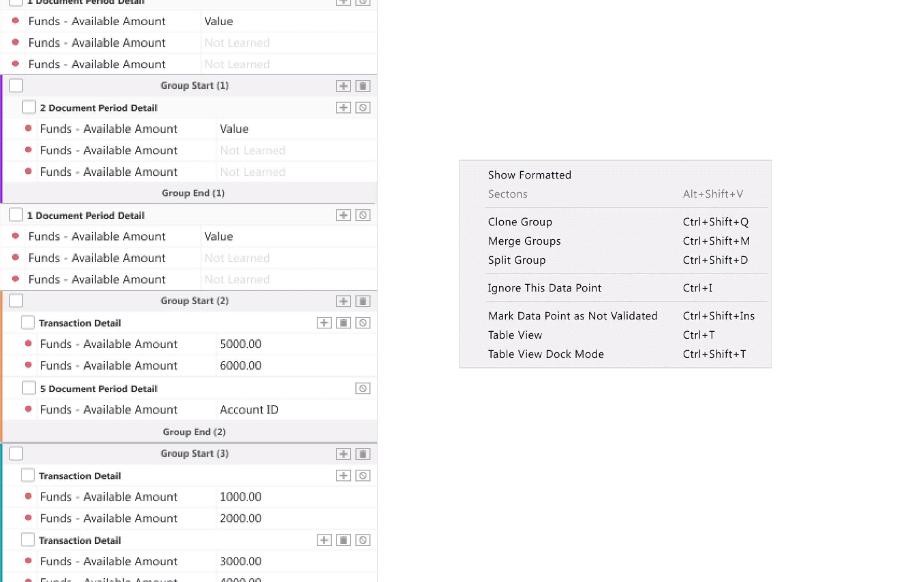
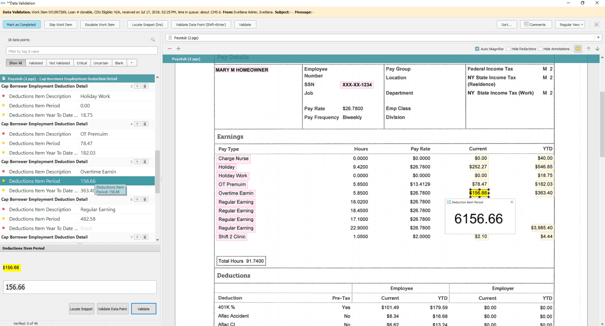

Overview
DDA Desktop is the original, flagship application in the DDA product suite — on the market for over 15 years and widely used across the mortgage industry. It's a mature, feature-complete platform for document processing, data extraction, and validation.
My focus was on continuously improving a product the QCS (Quality Control Services) team depends on daily — people who manually review complex, unrecognized documents and verify AI-driven data extraction accuracy.
The Challenge
The desktop platform had all core applications — no new ones developed in over five years. But "feature-complete" didn't mean "done."
QCS team members process high volumes of documents at speed, relying on muscle memory, keyboard shortcuts, and optimized routines. In this context, even small friction like an extra click, unclear state, or missing shortcut quickly adds up to real productivity loss.
The challenge: deeply understand these speed-critical workflows, identify high-impact opportunities using Elastic analytics data, and deliver targeted enhancements without disrupting a stable product.
My Approach
I worked directly with QCS end users alongside a business analyst and PM — a tight trio with continuous access to real pain points, not filtered requests.
-
Direct user engagement: Regular sessions with QCS team members to observe workflows, discuss frustrations, and collect feature requests firsthand.
-
Data-informed prioritization: Used Elastic application analytics to identify usage patterns, bottlenecks, and most-used features, then prioritized improvements based on frequency, severity, and development effort together with the PM.
-
Validation-driven design: Solutions validated directly with the same users before development — fast feedback loops with people who would use the feature daily
Selected Examples
Smart Groups in Indexing Validation
QCS users often deal with complex groups of data points. When the underlying logic is intricate, managing groups manually was error-prone and slow .
I designed Smart Groups — clear visual boundaries, inline controls, and a context menu packed with power-user shortcuts. Every action reachable without lifting hands off the keyboard, respecting the speed-first mindset of QCS workflows.

Auto Magnifier in Data Validation
The AI engine occasionally misrecognizes values, errors that can go unnoticed when label-box controls overlay part of the value, or when extracted text is too small to read.
I designed Auto Magnifier — enlarges the selected value without label-box overlay, toggled via shortcut or header control. A small change with outsized impact on recognition accuracy.

Impact
Efficiency
-
Dozens of improvements shipped, directly improving daily workflows for the QCS team.
-
Data-driven decisions. Elastic analytics guided prioritization, ensuring effort went to the highest-impact areas.
-
Strong user trust. Direct, ongoing collaboration meant QCS team members knew their feedback was heard, leading to higher-quality feature requests over time.
-
Zero disruption. All enhancements integrated into a 15+ year-old product without regressions or breaking established workflows.
Reflection
Working on a mature desktop product taught me a different kind of design discipline. It’s not about building from scratch, but improving what already works for people who use it all day at speed.
Watching QCS team members move through documents with shortcuts and muscle memory showed that even small changes, like saving a few seconds per document, create real impact at scale.
Discover Other DDA Projects
DDA Admin
Admin side allows for flexible configuration of our applications.

DDA Design system
Design System for our web projects, including DDA Web, Admin Panel, and Analyzers.

DDA Web Platform
Web version of our main product that automates tasks for lenders, investors, and servicers.